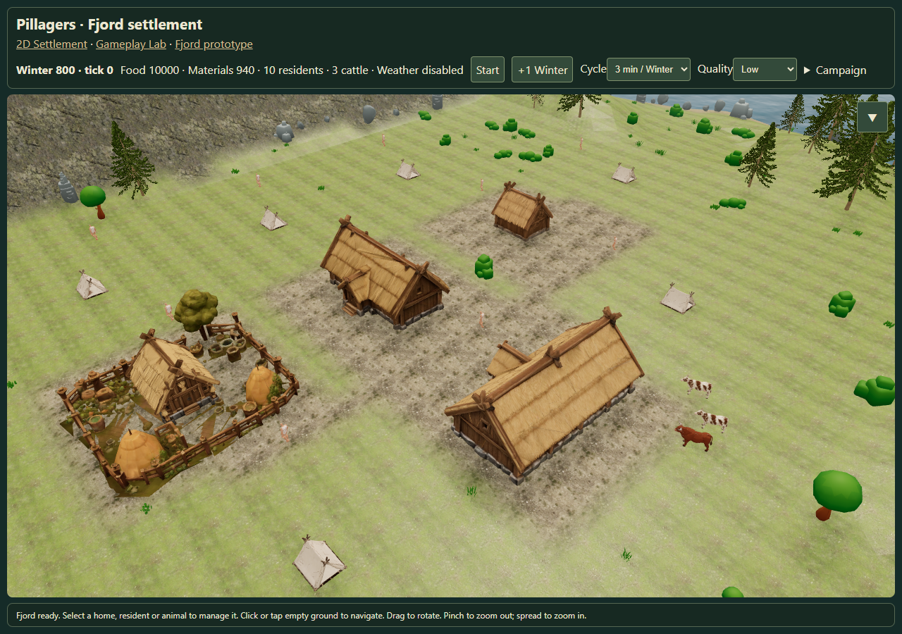
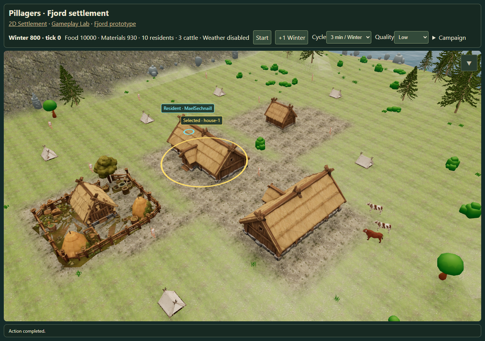

Fjord housing scale and headings
Report · Measurements · Open settlement
Homestead and corrected Longhouse
The Longhouse on the right matches Homestead height and is about 24% wider. Ordinary homes have different grid headings; the Farmyard retains its source orientation.

Actual management-panel upgrade
Upgrading the Homestead retains its position and heading, and replaces it with the calibrated Longhouse.
